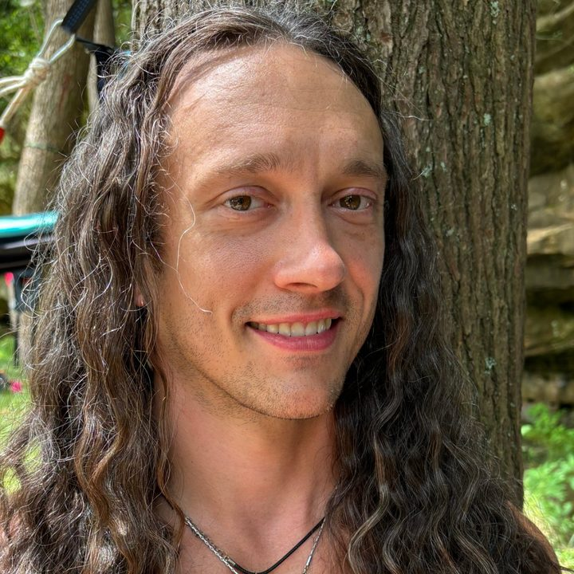
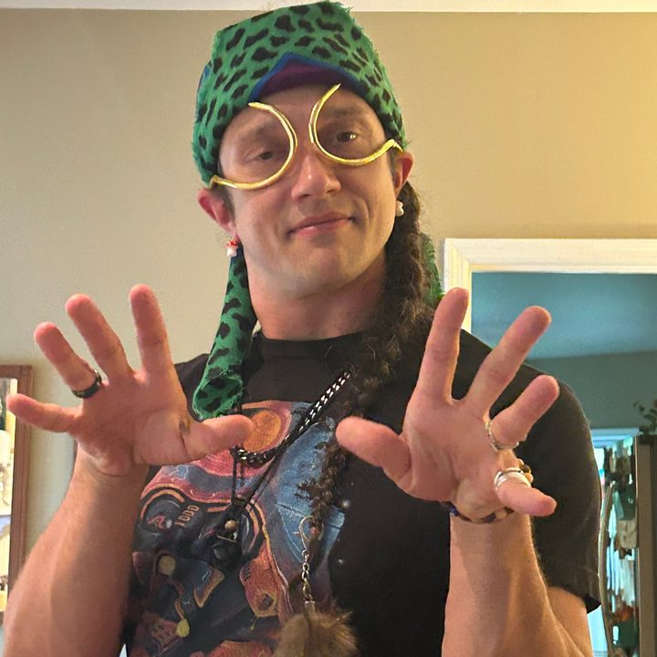

A TALK BY HOSPICE NURSE BRAD BURNS
Where we're going, we need no row.
But it could help to have a map.
Soul Nature Row'd Map is a 40-minute talk about how we die, from a hospice nurse who's been in the room hundreds of times. It's honest about what happens at the end of a life, and funny enough that people stay in their seats for it.
At a glance
Everything a planner usually asks before the first email.
- LENGTH
- 40 minutes, plus 10 to 15 for questionsA 30-minute version fits festival slots
- ROOM
- Seated rows or in the roundIndoors or out, living room to amphitheater
- STYLE
- Interactive, never put-you-on-the-spotNobody gets called on
- SPEAKER
- Brad Burns, hospice nurseCo-founder of Golden Soul Circus with Cass Burns
- COST
- From $750, on a sliding scale$350 community rate, and pay it forward for groups who can't pay
- BASED IN
- Nashville, TennesseeWe travel. Tell us where you are


YOUR SPEAKER
Meet Brad
Brad Burns is a hospice nurse and co-founder of Golden Soul Circus with his wife, Cass, also a hospice nurse. His decade of nursing runs from med/surg, ICU, float pool and COVID units to the bedside of the dying.
He was raised on singing telegrams and trained in stage acting and improv, so the talk moves like a show. He meets people where the ground is shifting under them, and helps them find something to smile about while it does.
Both, always.
What the talk covers
Four stops most bodies pass through at the end of life, named for the elements. Your people leave knowing what they might see at a bedside, and what helps.
- Earth
Getting ready to go.
Restlessness, sleeping more, and the first hard step: accepting help.
- Water
The big feelings.
Five gates of grief, and why there's no wrong way through them.
- Fire
The messy middle.
Agitation, strange sounds, and comfort medicine used with care.
- Air
Letting go.
Breathing changes, and why the room so often feels lighter afterward.
Everyone gets a take-home page by QR code: the four stops, the five gates, and starter questions for “The Talk.” See the take-home page (opens in a new tab)
Who books it
- Community and faith groupsCongregations, libraries, neighborhood circles
- Hospice and care teamsStaff gatherings, volunteer training, family nights
- Caregiver and grief groupsPeople in the middle of it, or just after
- WorkplacesWellness days and teams carrying a loss
- Festivals and wellness eventsStage slots, tents, and workshop tracks
- Anyone curious about dyingWhich, sooner or later, is all of us
That's why we started Golden Soul Circus:
to rehearse “The Talk” with you, calmly and kindly, with room to laugh, before “later” becomes an emergency room.
Questions before you book
Tap a question for the answer.
BOOK THE TALK
Give your flowers while you live.
Tell us about your group and we'll write back to plan the details together. The booking form takes about three minutes.
- FULL RATE$750Hospices, healthcare, workplaces and conferences
- COMMUNITY RATE$350Nonprofits, faith groups and libraries
- PAY IT FORWARDWhat you canGrief groups and hospice families, including nothing at all
Opens our booking form in a new tab. Full-rate bookings help pay for the pay-it-forward ones. Travel more than an hour from Nashville adds mileage.